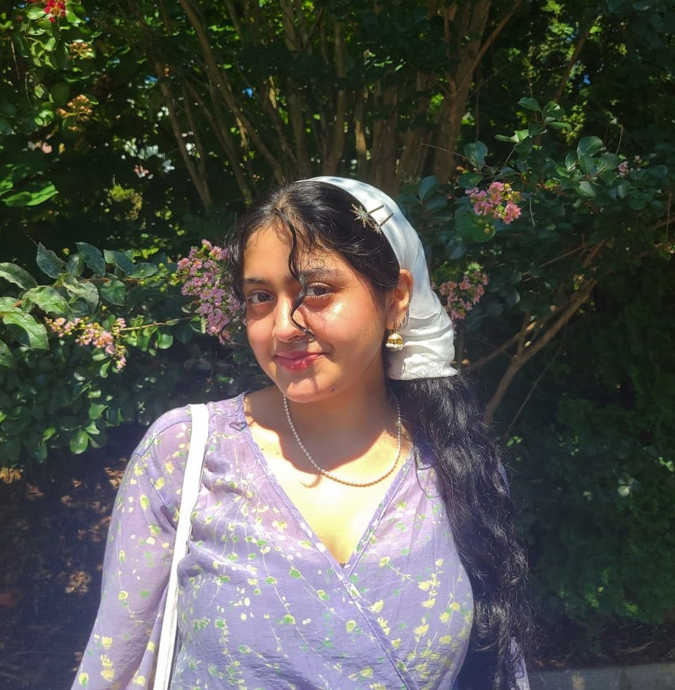

Insiya Motiwala
I’m a sophomore studying Art History and Interactive Media! I love learning new ways to combine technology with historic art traditions. I am especially passionate about art institutions and the role they play in shaping society and culture. I also have many hobbies like embroidering and drawing that you can explore in this portfolio! For this website I was inspired the the Art Nouveau movement, characterized by its unique illustration style.
Reach out to me at iam7100@nyu.edu to learn more!